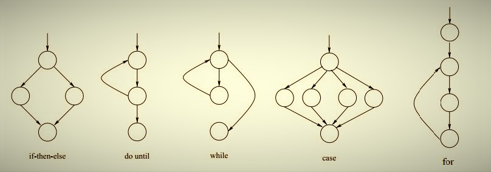
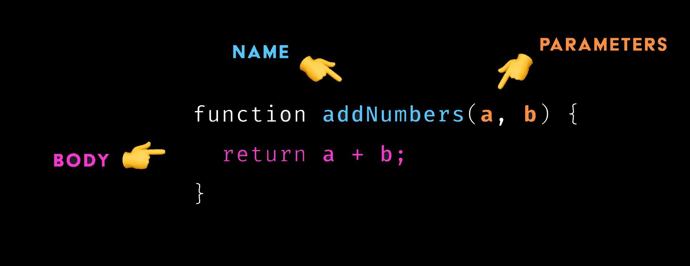
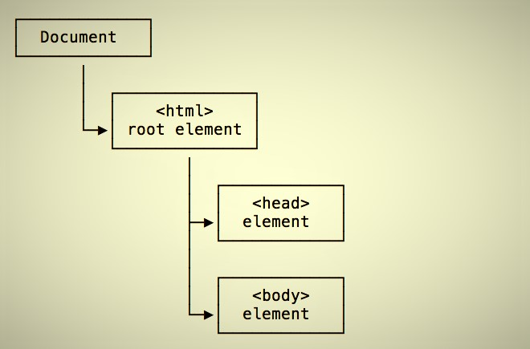

relationship With html & css
Why is JavaScript so important?
HTML, CSS, and JavaScript band together to make up the 'Living Creatures of the Internet'. We hold the power to play God in this virtual world.
HTML, the skeleton (or exoskeleton), CSS, the appearance of skin (or fur), and JavaScript, the brain, muscles, and organs.
When only using HTML & CSS, they form landscapes and terrains — but combined with the magic of JavaScript. The beginning of lifeforms emerge.

control flow & loops
Control Flow
Control Flow is the process of determining the correct order at which the functions will be executed. The Brain sends signals to the muscles when its decided to move. Once the muscle receives the signal, it moves. It is unable to move before the signal gets there because the brain controls on the flow of the signal, not the muscle.
Loops
Loops are an element that repeats a portion of code a set number of times until the desired process is complete. Repetitive tasks are common in programming, and loops are essential to save time and minimize errors.
arrays & objects
Arrays
Arrays are like your weekly calendar. There is a process for how you go about your week. Monday-Sunday. You can add content to a day but each of these days has an index and it will always follow a zero-based pattern, meaning Monday is 0 and Sunday is 6.
Objects
Objects are like shopping lists or bucket list. They follow no order, only what you need or what you want. You can write whatever but it has to use references assigned to values in order to hold the information.
functions
A Building Block
Functions are the muscles and organs of the 'Living Internet Creatures'. The muscles are what give the body movement, they follow a series of instructions so that they can perform the task. The organs also has sets of instructions depending on what is needed from them. Each having a key role to play the functions work so that the 'Creature' can 'Live'.
the dom & devtools
The DOM
The DOM, also know as the Document Object Model. This is the plain at which all virtual life exists. HTML, CSS, and JavaScript live here to create a home for the 'Creatures'. Though only JavaScript can make changes to it's behaviour and creating a reactive platform for the Gods to interact with.
DevTools
Chrome DevTools is your tool belt. When working on the job, we need tools on-the-fly. DevTools allows us to hold certain powers so that we may control the lands and all it's 'Creatures'. The wizard has grants us such power comes from this U R L, you must give thanks, https://developer.chrome.com/docs/devtools/ . HaZza!